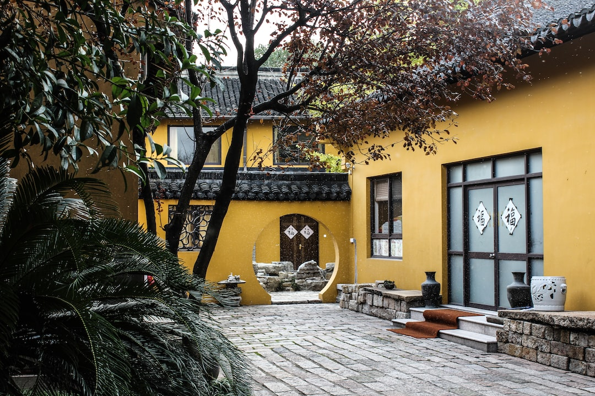

More Modules, More Production, More Cost Reduction
MVF modularity allows flexible configurations — containers can even be stacked up to 10 containers high. Stacking brings out two advantages:

築城
FORTRESS
When arranged as a system of walls, a farm benefits from creating courtyards that can host forests of hydroponic pillars to cultivate fruits or vegetables. Each pillar can grow 60 plants, standing 60 cm apart. Roofing over these courtyards can be added for added protection. Reflective panels inside the courtyard provides more sunlight to the plans.

梯田
TERRACE
When arranged high, containers benefit from potential energy to move water through the system, like terrace farms in the real world. Water moves back up through fluid dynamic principles assisted by water blower system.
| MVF Aquacon™ | MVF Horticon™ | |
|---|---|---|
| フルネーム | Aquaculture Container Module (養殖用コンテナモジュール) | Horticulture Container Module (園芸用コンテナモジュール) |
| 説明 | Aquacon™ は、魚の成長を最適化するための制御された環境を維持するための水槽、濾過タンク、機器を備えた断熱輸送コンテナです。 | Horticon™ は、スペース内を移動する 5 層のポータブル水耕栽培用トラフを備えた断熱輸送コンテナで、コンテナのドア側から作物にアクセスできるようにしています。 |
| 機能 |
|
|
| 特典 |
|
|
| 影響 |
|
|
| 構造 |
|
|
| メンテナンス (維持) |
|
|
| コスト (料金) | サイズとカスタマイズによって異なります | サイズとカスタマイズによって異なります |
| 可用性 | いつでも購入可能 | いつでも購入可能 |